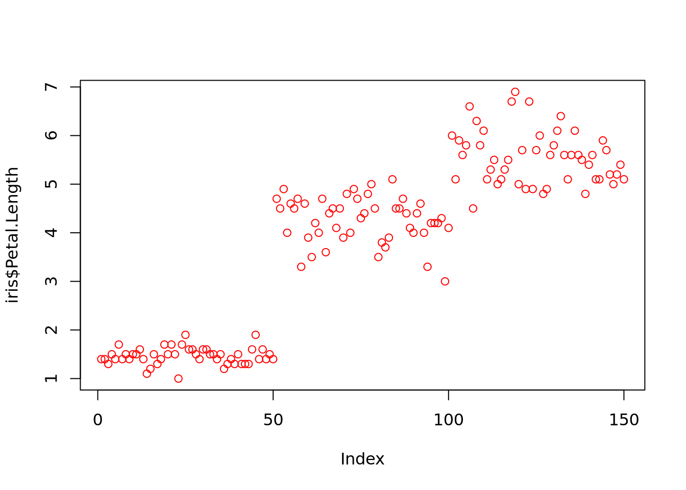
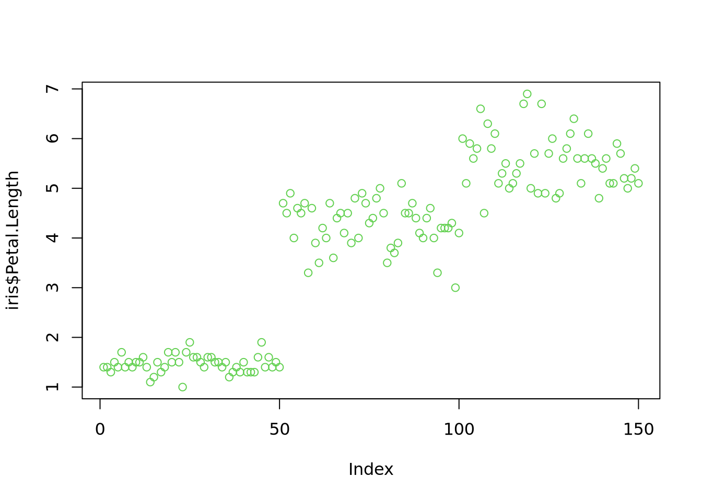

Code
plot(iris$Petal.Length, col = "red") # by name: try colours()
Code
plot(iris$Petal.Length, col = rgb(0,0,1)) # by RGB-value: ?rgbCode
plot(iris$Petal.Length, col = 3) # by index into color palette: ?palette()
Thomas Manke
Colours can be referenced in different ways:
Palettes can be used to refer to colour by index.
Lots of studies have been made on the choice of appropriate colour schemes: https://colorbrewer2.org
There are additional packages to simplify the choice of palette
---
title: "S03: Colours"
author: "Thomas Manke"
categories:
- colours
---
```{r setup, include=FALSE}
knitr::opts_chunk$set(echo = TRUE)
knitr::opts_chunk$set(cache=TRUE)
```
# Colours
Colours can be referenced in different ways:
```{r color}
plot(iris$Petal.Length, col = "red") # by name: try colours()
plot(iris$Petal.Length, col = rgb(0,0,1)) # by RGB-value: ?rgb
plot(iris$Petal.Length, col = 3) # by index into color palette: ?palette()
```
# Palettes
Palettes can be used to refer to colour by index.
```{r palettes}
mycol=c("black", "skyblue", "maroon2") # define your own set of colours; Warning: don't overdo
palette(mycol)
plot(iris$Petal.Length, col=iris$Species)
palette("default") # not the best?
plot(iris$Petal.Length, col=iris$Species)
palette("Set 1") # check palette.pals() for more choices
plot(iris$Petal.Length, col=iris$Species)
```
# ... and there is more
Lots of studies have been made on the choice of appropriate colour schemes: https://colorbrewer2.org
There are additional packages to simplify the choice of palette
```{r RColorBrewer}
library(RColorBrewer)
my_col=brewer.pal(4, "Dark2")
palette(my_col)
plot(iris$Petal.Length, col=iris$Species)
```